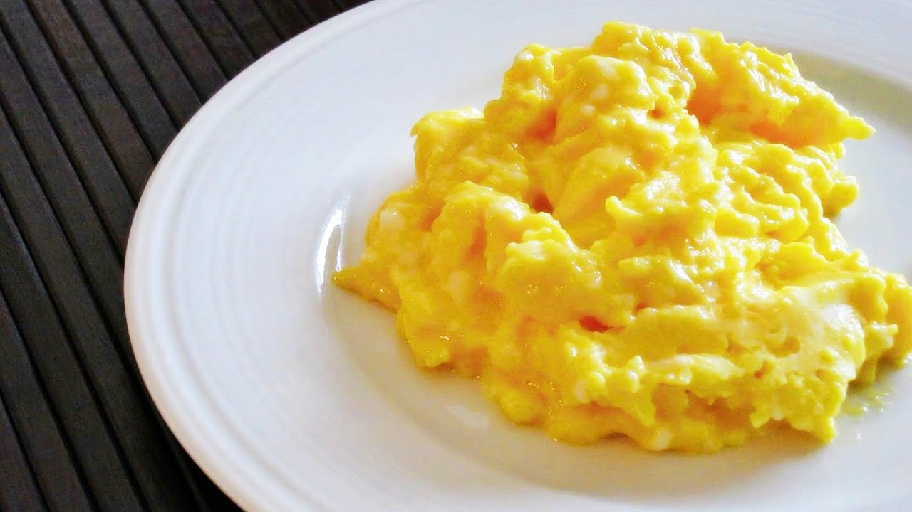

My Recipe
Instrustions

The food I'm going to make is scrambled eggs, I like to make scrambled eggs beacause its very easy to make, fast to make, and tasty.
Ingredients
- 3 Eggs
- 1 green onion
- a spoon of minced garlic
- ½Spoon of vinegar
- ¼Cup oil
Instrustions
- Beat eggs in a bowl
- Cut the green onion and put both of green onion and minced garlic in to egg liquid
- Put vinegar in to egg liquid and stir well
- Put some oil on the pan, heat up, and put egg liquid in to the pan
- start frying